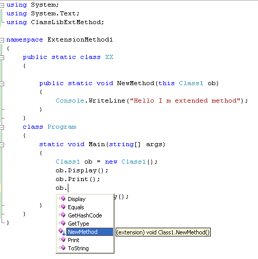

1) Ce sunt Extension Methods?

Un Extension Method este o metodă specială care îți permite să adaugi funcționalitate
unui tip deja existent (string, DateTime, IEnumerable etc.)
fără să modifici codul sursă al acelui tip.
Tehnic, scrii o metodă statică într-o clasă statică, dar cu un mic „truc”: primul parametru are cuvântul cheie
this. Asta îi spune compilatorului că metoda se poate apela ca și cum ar fi parte din acel tip.
.Where(), .Select(), .OrderBy()
sunt toate extension methods scrise peste IEnumerable<T>.
2) De ce sunt utile?
- Cod mai curat: logica ta apare direct lângă tipul pe care îl folosești.
- Reutilizare: poți împacheta reguli și mici helperi pe care să-i refolosești în toată aplicația.
- Nu atingi codul existent: utile când vrei să „extinzi” tipuri din .NET sau din librării externe.
3) Exemplu mic
Vrem o metodă care verifică dacă un string are doar litere mari.
public static class StringExtensions
{
public static bool IsAllUpper(this string input)
{
return !string.IsNullOrEmpty(input) && input.All(char.IsUpper);
}
}
// Folosire:
Console.WriteLine("HELLO".IsAllUpper()); // True
Console.WriteLine("Hello".IsAllUpper()); // False
Observă cum "HELLO".IsAllUpper() pare o metodă nativă pe string,
deși noi am scris-o separat într-o clasă statică.
4) Bune practici
- Pune extensiile în clase statice cu nume clar (
StringExtensions,DateTimeExtensions). - Nu abuza: folosește-le pentru mici ajutoare, nu pentru a ascunde logici complicate.
- Documentează cu comentarii XML ca să apară în IntelliSense.
5) Concluzie
Extension Methods sunt o unealtă simplă dar puternică, care fac codul mai lizibil și mai expresiv. Dacă ai folosit LINQ, deja le folosești zilnic. Scrise cu grijă, pot să devină „scurtăturile” care îți fac viața de developer mai ușoară.